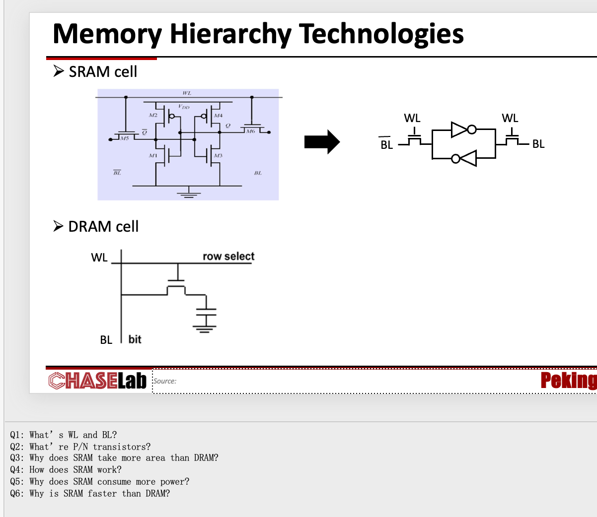
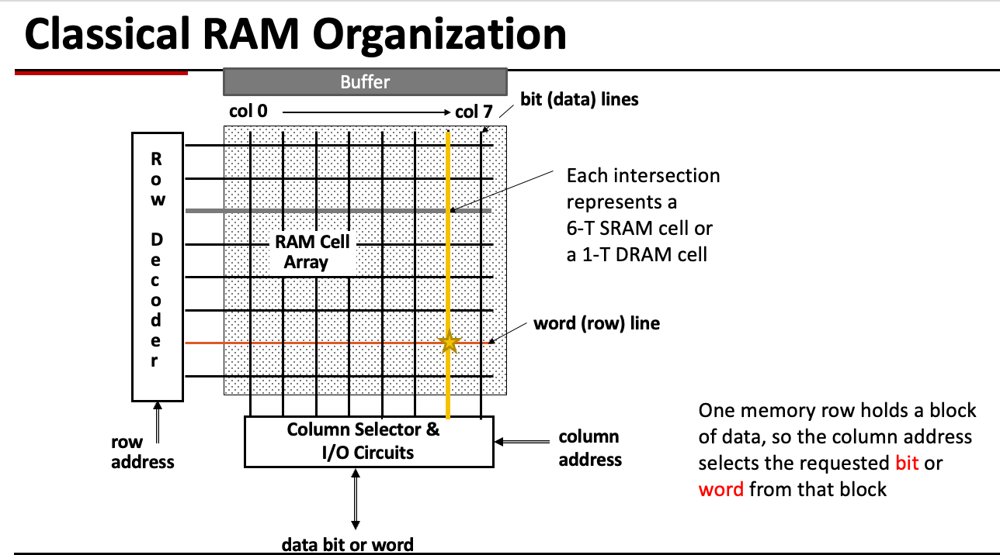
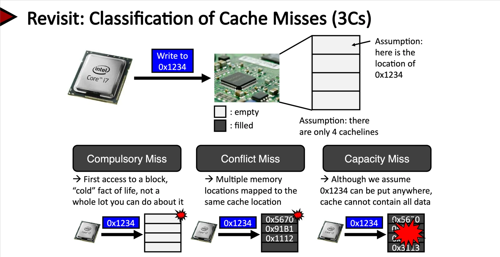
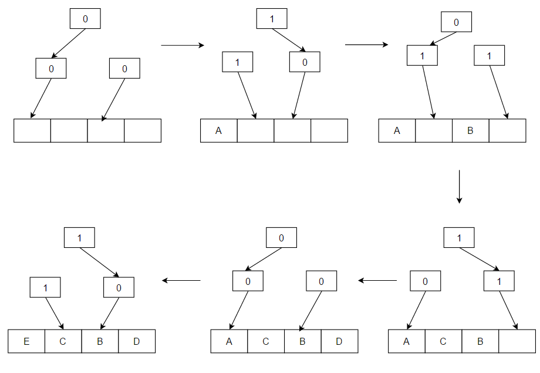
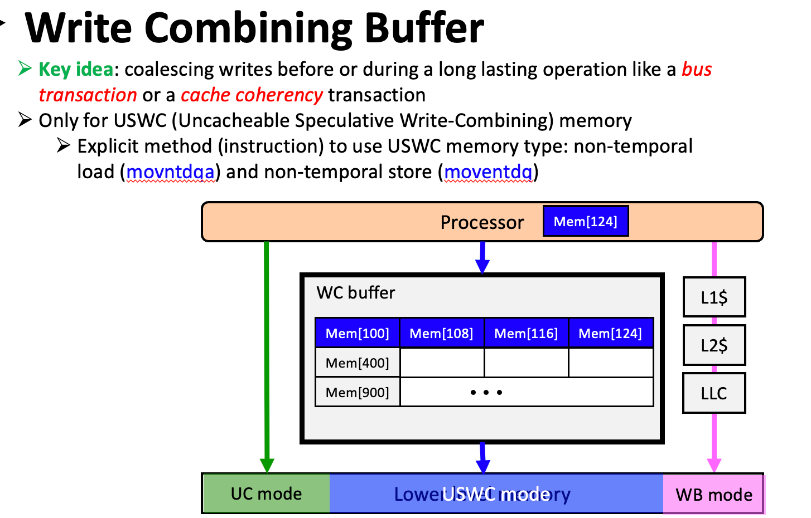
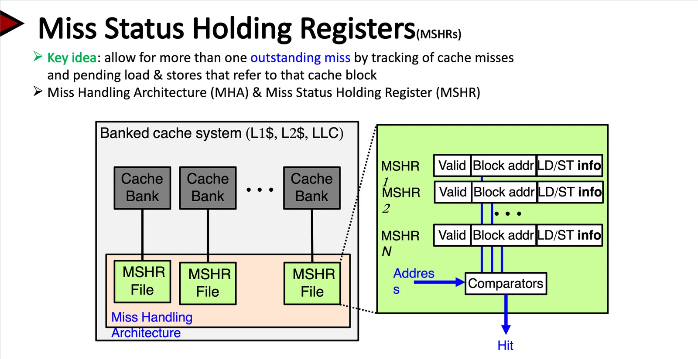
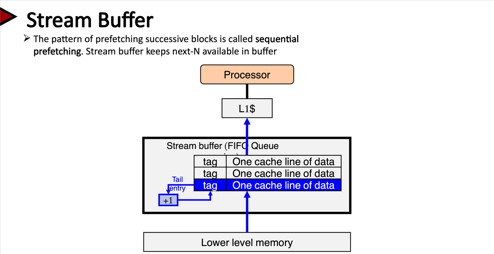
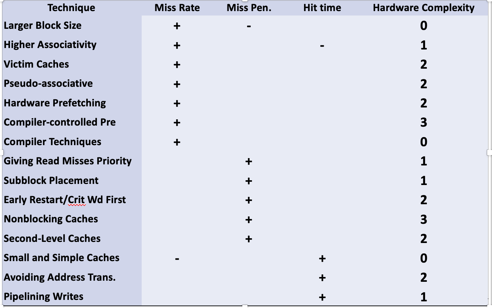

CPU 比主存快得多，怎样利用少量快速存储，让大部分访问都足够快？设计 Cache 时，需要依次考虑：放在哪里、怎样确认命中、替换谁、写入时怎么办。最后用 AMAT 与 CPU 执行时间衡量这些选择。
一、为什么需要 Cache：Memory Wall 与存储层次 #
1.1 处理器与主存的速度差距 #
处理器运算速度与 DRAM 访问速度之间存在差距。如果每次取指和读写数据都等待主存，CPU 会花大量时间停顿。随着处理器周期缩短，同样一次主存访问会占用更多 CPU 周期，这就是 **Memory Wall（存储墙）**问题。
常见存储层次可以写成：
寄存器 → L1 Cache → L2 Cache → LLC（末级缓存）→ 主存 DRAM → SSD / 磁盘越靠近 CPU，通常越快、容量越小、单位容量成本越高。层次化设计的目标是：以较低成本提供较大容量，同时让大部分访问接近上层存储器的速度。
二、存储器技术：SRAM 与 DRAM #
课件：第 9—16、19 页。
RAM 中的 **Random Access（随机访问）**指可以按地址直接访问任意位置，无须先顺序扫描前面的数据。“随机”不是访问结果不确定，也不表示真实器件的每种访问都严格等时；例如 DRAM 的行命中与行未命中就可能有不同延迟。
2.1 两种易失性存储器 #
| 比较项 | SRAM | DRAM |
|---|---|---|
| 全称 | Static Random Access Memory | Dynamic Random Access Memory |
| 典型存储单元 | 6 个晶体管，6T | 1 个晶体管和 1 个电容，1T1C |
| 保存数据的方式 | 交叉耦合反相器形成稳定状态 | 电容上的不同电荷状态 |
| 是否需要刷新 | 供电期间不需要周期性刷新 | 需要周期性刷新 |
| 正常读出后是否需要恢复单元数据 | 不需要专门回写恢复 | 需要由内部电路恢复电荷 |
| 速度与密度 | 较快、密度较低、单位容量成本高 | 较慢、密度较高、单位容量成本低 |
| 典型用途 | Cache | 主存 Main Memory |
| 整体组织 | 存储单元阵列 | 存储单元阵列 |
**Static / Dynamic 区分的是保存数据是否依赖周期性刷新。**Dynamic RAM需要周期性刷新，SRAM不需要，SRAM直到断电都不会丢失数据。两者都是 volatile（易失性）存储器，断电后都无法持续保留数据。SRAM 的“静态”不代表断电后仍然保存，也不代表零功耗。
缓存用SRAM来追求高频率、低延迟（speed）和较高访问吞吐量。而主存（Main Memory）用DRAM来追求高密度、低单位容量成本。因此主存可以做的很大，而缓存应该做的很小，来提供一种“很大、很便宜、很快”的错觉。
课件还给了第三个理由：technology compatibility（工艺兼容）。Cache 与处理器都用 CMOS 逻辑工艺，可以放在同一颗芯片上；DRAM 依赖电容工艺，通常做成独立芯片，要经片外接口访问。片上集成省掉了片外往返，Cache 才可能“贴”在 CPU 旁边。
单元面积 SRAM / DRAM 约 4—16 倍；周期时间 DRAM / SRAM 约 8—16 倍；DRAM 需要约 每 64 ms 刷新一次，刷新开销约占其活跃周期的 1%—2%。记这些数字是为了有量级感，不同工艺差别很大。
2.2 识图：存储单元、WL、BL 与 P/N 晶体管 #

上图画的是各自保存 1 bit 的单元电路，并非整片存储器。SRAM 右侧图是左侧六晶体管电路的简化表示。
- WL 与 BL
| 标记 | 名称 | 作用 |
|---|---|---|
| WL | Word Line，字线 | 由行译码结果控制，打开一行单元的接入晶体管 |
| BL | Bit Line，位线 | 在单元与外围读写电路之间传递数据 |
对图中的 NMOS 接入晶体管：
- WL = 0：接入晶体管关闭，内部存储节点与位线隔离。
- WL = 1：接入晶体管打开，可以通过位线读写。
SRAM 简化图两侧的 WL 是同一字线信号，控制两个接入晶体管。两条配对位线在读之前可以都预充为高电平，不能把“互补位线”理解为它们在所有时刻都必须一高一低。
- PMOS、NMOS 与 CMOS 反相器
晶体管可以先看成由栅极电压控制的开关。对图中的普通 CMOS 反相器：上方 PMOS 将输出连接到电源，下方 NMOS 将输出连接到地。
| 输入 | PMOS | NMOS | 输出 |
|---|---|---|---|
| 0 | 导通，连接电源 | 关闭 | 1 |
| 1 | 关闭 | 导通，连接地 | 0 |
因此，一个 PMOS 加一个 NMOS 可以组成一个 NOT（反相器），输出与输入相反。图中 M2、M4 为 PMOS，M1、M3 为 NMOS；它们组成两个反相器。M5、M6 是由 WL 控制的 NMOS 接入晶体管。
这里的“高电平导通 / 低电平导通”是针对图中连接方式的逻辑化描述；实际是否导通取决于栅源电压与阈值电压。
2.3 SRAM：两个反相器怎样记住 1 bit #
- 交叉耦合与两种稳定状态
SRAM 把两个反相器交叉连接：每个反相器的输出，都是另一个反相器的输入，形成正反馈环。
设两个内部节点为 \(Q\) 与 \(\overline Q\)，其稳定状态有两种：
| 保存的值（以 Q 为准） | Q | 互补节点 |
|---|---|---|
| 0 | 0 | 1 |
| 1 | 1 | 0 |
例如 \(Q=1\)、\(\overline Q=0\) 时：输入为 1 的反相器输出 0，输入为 0 的反相器输出 1，两边相互支持当前状态。只要持续供电，电路就能在正常工作条件下维持这一状态。
两个反相器会稳定在“一边为 0、另一边为 1”的状态，不会不停地互相取反。两个互补节点共同保存 一个 bit，不是两个彼此独立的 bit。
- 保持、写入与读取
- 保持：WL 为 0，接入晶体管关闭；反馈环与位线隔离，自行保持数据，不需要周期性刷新。
- 写入：写驱动电路在两条位线上提供互补值，随后打开 WL，使内部节点改变到所需状态，再关闭 WL。
- 读取：先将两条位线预充到高电平，再打开 WL。内部保存 0 的一侧使对应位线略微放电，另一侧保持较高电压，由感应放大器检测电压差并输出数据。
正常设计下，读操作不会翻转保存的 bit，因此不需要像 DRAM 那样在读出后恢复存储单元。这里的预充位线是为读操作准备线路，不是对 SRAM 保存的数据做周期性刷新。在后文中DRAM读取时，由于读出后需要恢复存储单元，还有漏电等问题，导致读取的时间会比SRAM要长，所以SRAM要更快一些。
2.4 DRAM：用电容保存数据 #
DRAM 的典型单元为 1T1C：一个接入晶体管、一个存储电容。电容的不同电荷状态表示 0 或 1。
- 写入：打开 WL，通过 BL 给电容充电或放电，达到目标状态，再关闭 WL。
- 暂时保持：关闭 WL，将电容与 BL 隔离；但电容电荷会因漏电逐渐变化，不能无限期保持。
- 读取：打开 WL，电容与预充的位线共享电荷，产生微小电压变化，由感应放大器检测、放大，并恢复单元中的电荷。
- 周期性刷新：即使没有需求访问，也要在数据失效前定期恢复各行中的电荷。
读后恢复处理的是读出扰动了电容电荷；周期性刷新处理的是电荷随时间泄漏。二者相关，但触发原因不同。DRAM 读出通常称为破坏性读出，恢复由内部电路完成，程序不需要每次读取后再执行一次 Store。
2.5 ⭐ 面积、速度与功耗的取舍 #
- 为什么 SRAM 单位容量的面积更大
SRAM 每 bit 需要 6 个晶体管及相应连线，DRAM 每 bit 使用 1T1C；DRAM 还可以利用立体电容结构提高密度，因此单位容量通常更紧凑。同样面积下，DRAM 通常能提供更大的容量。
但 6T 与 1T1C 不是面积比公式，不能据此断言 SRAM 面积恰好是 DRAM 的 6 倍。具体面积还受工艺、连线和外围电路影响。
- 为什么 SRAM 通常更快
SRAM 内部已经存在由反馈电路维持的逻辑状态，选中单元后可以驱动位线读出。DRAM 则需要检测小电容与位线共享电荷产生的微小变化，并完成放大、恢复，以及相应的行访问控制。
两者读取都可能使用感应放大器，区别不是“SRAM 不需要放大、DRAM 需要放大”。实际延迟还与阵列大小、连线、外围电路和接口有关。
DRAM 首次打开一行的访问通常较慢；如果所需数据已经在打开的行缓冲中，后续列访问可以更快。因此不能把每次 DRAM 访问都看成完整重复一次行激活。
- 为什么课件常说 SRAM 更耗电
虽然直觉上SRAM是6个晶体管，似乎看起来确实更耗电，但是严谨一点比较，主要是同容量下较多器件带来的漏电，以及高速读写的电路开销。
第一，保持数据时，实际晶体管会漏电：SRAM 每 bit 通常需要 6 个晶体管；而 DRAM 每 bit 通常只需要 1 个晶体管和 1 个电容。在相近工艺下，SRAM 每 bit 使用更多器件，通常会有较大的漏电开销。单个单元的漏电很小，但几百万、几千万个单元累加起来，就会形成明显的待机功耗。
第二，读写时，字线、位线和外围电路要充放电。SRAM 用作 Cache，通常追求高频率、低延迟和较高访问吞吐量。这些高速读写活动会产生动态功耗。
2.6 阵列组织与行列寻址 #
SRAM 和 DRAM 都可以组织成二维存储单元阵列。 6T / 1T1C 描述单元内部结构，阵列描述大量单元怎样排列，这两个层次要分开。

- Row Decoder（行译码器）：根据行地址激活相应 WL。
- WL（字线）：沿一行连接多个单元，控制这些单元的接入晶体管。
- BL（位线）：沿列连接单元与感应放大器、写驱动等外围电路。
- Column Selector（列选择器）：选择所需的位、字或输出数据。
DRAM 的经典接口还会将行地址与列地址分阶段传递，以复用地址引脚：
- RAS（Row Address Strobe）：用于行地址的选通 / 锁存，触发行选择。
- CAS（Column Address Strobe）：用于列地址的选通 / 锁存，触发列选择。
这些名称体现经典 DRAM 接口的原理；现代 SDRAM / DDR 通过时钟与命令编码完成相应操作，不能把它们简单理解为两根信号分别独立地“直接读取行和列”。
延伸阅读：MIT SRAM 单元与读写、MIT DRAM 单元与刷新、TI CMOS 反相器、TI CMOS 功耗。
三、Cache 的工作原理与设计问题 #
3.1 局部性：Cache 为什么有效 #
| 局部性 | 含义 | 例子 | 对 Cache 的启发 |
|---|---|---|---|
| 时间局部性 Temporal Locality | 最近访问过的内容，很可能再次访问 | 循环体指令、反复读取的变量 | 将近期使用的数据保留在靠近 CPU 的位置 |
| 空间局部性 Spatial Locality | 访问某个地址后，很可能访问附近地址 | 顺序遍历数组、顺序取指 | 每次搬入连续的一块数据，而非单个字节 |
for (int i = 0; i < n; ++i) {
sum += a[i];
}对 a[i] 的连续读取体现空间局部性；循环体指令反复执行体现时间局部性（这里说的是指令）。sum 在源代码中反复使用，但编译后可能一直放在寄存器中，未必每次都访问数据 Cache。
3.2 工作集：Cache 需要保留哪些数据 #
程序在一段时间内，往往只集中访问整个地址空间的一小部分，即当前的 工作集 Working Set。只要上层 Cache 能保留当前经常使用的块，就可能用有限容量服务大量访问。
在当时的OS课程中（见下方文章链接），工作集 W(t, Δ) 定义为：在当前t时刻，进程在过去的Δ个虚拟时间单位中使用的虚拟页面集合；并设计出一种算法，估计应保留哪些页面，减少缺页和抖动。
工作集虽然以页面定义，但可以推广到其他命名的信息单位，所以应用到 Cache 块是自然的推广。比如统计单位从页面推广到 Cache 块；虽然没有明确的统计时间窗口，但可以泛指某一个执行时间段；用途也差不多，用于估计哪些块能够被缓存，减少失效。
3.3 基本单位：Block、Line、Set、Way #
| 术语 | 含义 |
|---|---|
| Block，块 | 在相邻存储层次之间搬运数据的基本单位 |
| Cache Line，缓存行 | Cache 中容纳一个块的位置，并配有 Tag、Valid 等元数据 |
| Set，组 | 按 Index 选中的候选行集合 |
| Way，路 | 一组中的一个候选位置；A 路组相联表示每组有 A 行 |
| Tag，标记 | 区分映射到同一组的不同内存块 |
| Valid，有效位 | 表示该行当前是否保存有效数据 |
| Dirty，脏位 | 在写回策略下，表示该行是否包含尚未写入下一级的修改 |
“缓存行大小”通常指其 数据块大小，不包含 Tag、Valid、Dirty 等元数据。做容量题时要先确认题目统计的是数据容量，还是硬件总存储开销。
3.4 访问结果：Hit 与 Miss #
- Hit：访问的块在 Cache 中，且该行有效。
- Miss：无法在本级 Cache 获得所需数据，需要请求下一级。
- Hit Rate：命中次数 / 总访问次数。
- Miss Rate：失效次数 / 总访问次数，等于
1 - Hit Rate。 - Hit Time：查找本级 Cache 的时间 + 判断命中并获得数据所需的时间。
- Miss Penalty：失效后，更换上级 Cache 的块的时间 + 获取所需数据并将数据传递给处理器的时间。
缓存未命中有几种情况：
- Compulsory Miss: 冷启动：Cache 为空，所有块都失效。
- Conflict Miss: 冲突，由映射位置导致。
- Capacity Miss: 缓存满了，由容量不足导致。
3.5 Cache 性能的衡量 #
这里采用一个基本模型：Cache 命中的开销已经计入正常执行周期，只额外计算失效和写缓冲造成的停顿，暂不考虑多个访存请求之间的重叠。
AMAT（Average Memory Access Time，平均访存时间）：
$ AMAT=\text{Hit Time}+\text{Miss Rate}\times \text{Miss Penalty} $
- Hit Time：查找本级 Cache、判断命中并获得数据的时间。
- Miss Rate：本级失效次数占本级访问次数的比例。
- Miss Penalty：本级失效后，获取数据所需的额外时间，不包含已经计入的本级查找时间。
若命中耗时为 \(H\)，失效率为 \(r\)，失效的额外代价为 \(P\)，则：
$$ AMAT=(1-r)H+r(H+P)=H+rP $$计算时，各项时间单位必须统一，例如全部使用 ns，或全部使用同一时钟下的周期数。
AMAT 衡量每次访存的平均代价；CPI 衡量每条指令的平均周期数；CPU 执行时间衡量整个程序的运行时间。
3.6 四个设计问题：放置、查找、替换与写入 #
| 设计问题 | 对应策略 |
|---|---|
| 一个内存块能放在 Cache 的哪些位置？ | Placement：直接映射、组相联、全相联 |
| 怎样判断需要的块是否在 Cache？ | Identification：Index 选组，Valid 与 Tag 判断命中 |
| 空间不足时替换哪个块？ | Replacement：LRU、FIFO、Random、PLRU 等 |
| CPU 写数据时如何更新各层？ | Write policy：写直达 / 写回，写分配 / 不写分配 |
四、设计问题 1、2：块放在哪里，怎样找到它 #
4.1 统一参数与公式 #
以下假设：按字节寻址，容量、块大小与组数为 2 的幂，采用课件中的普通位选取映射。定义：
- 地址宽度为 \(m\) 位。
- Cache 数据容量为 \(C\) 字节。
- 每块大小为 \(B\) 字节。
- 相联度为 \(A\)，即每组 \(A\) 行。
- Cache 总行数为 \(N\)，组数为 \(S\)。
对于地址 \(x\)：
地址高位 地址低位
+--------------------+--------------+------------------+
| Tag | Set Index | Block Offset |
| t 位 | s 位 | b 位 |
+--------------------+--------------+------------------+4.2 直接映射 Direct Mapped(DM) #
每个内存块只有一个可能的位置，相当于 1 路组相联：
$$ A=1,\qquad S=N $$查找时用 Index 定位唯一候选行，检查 Valid == 1 且 Tag 相同。
优点是结构简单、比较器少、命中路径较短。缺点是不同内存块可能反复争抢同一行，产生 Ping-pong Effect（乒乓效应）。即使其他行空着，也不能随意放过去。
为了解决这一问题，一个方法是，减少组的数量。假设每一个组仍然是一路，组的数量减少了，一个组中的一路的块数就可以增加了。比如，刚刚的直接映射中，组数减少一半，那么虚拟地址可以多腾出一位用来给组内的块当作一个偏移。这样，一组的一路就可以容纳更大的相邻地址了。（这里说的是Multiword Direct Mapped Cache，一组仍然是一路，但是该路内有多个块，虚拟地址需要拿出几位用来作为Block Offset，分割起来就是Tag | Index of Set | Block Offset | Blocks）。
那假设每个组可以是多路呢？就引出了下面的组相联映射。
4.3 组相联 Set Associative(SA) #
一个块只能映射到一个组，但可以放在该组的任意一路。查找时：
- Index 选中一个组。
- 并行比较该组各路的 Valid 与 Tag。
- 若某一路命中，用多路选择器选择对应数据。


我第一次看到课件上的图1示例的时候硬是没看懂咋画的，感觉和印象中csapp的图不太一样，很奇怪。后来想了想感觉也是有道理的：
图1和csapp中的图2可能看起来不太一样。图2更方便理解；图1更方便呈现利用Tag的并行比较。在图2中，一个Set里面有多个Way；在图1中，一个Set是一整行，每一行分成了4个Way。然后在比较的时候，通过Index选中了一个Set后，就将4个Way的Tag与地址中的Tag并行比较。图2在理解概念的时候比较好，图1在理解过程的时候比较好。
相联度增加，通常能减少冲突失效，但需要更多比较器和选择逻辑，可能增加面积、功耗与 Hit Time。
4.4 全相联 Fully Associative(FA) #
一个块可以放在 Cache 任意位置，相当于 只有一组，组内包含全部行，没有 Set Index，地址只需拆成 Tag 和 Offset。全相联消除了固定组映射导致的冲突，但比较硬件昂贵，容量失效和冷失效仍然存在。
| 映射方式 | 组数 | 每组行数 | 普通并行查找时的 Tag 比较数量 |
|---|---|---|---|
| 直接映射 | \(N\) | 1 | 1 |
| A 路组相联 | \(N/A\) | \(A\) | \(A\) |
| 全相联 | 1 | \(N\) | \(N\) |
对于全相连来说，每个地址可以映射在任意一行，所以不会出现Conflict Miss。
五、回看 Cache Miss：三类失效（3C） #
| 类型 | 原因 | 常见改善方向 |
|---|---|---|
| Compulsory Miss，冷失效 / 首次访问失效 | 第一次需求访问一个尚未载入的块 | 利用空间局部性，或提前预取 |
| Capacity Miss，容量失效 | Cache 容量无法保留需要重用的全部块 | 增大容量，分块计算，缩小工作集 |
| Conflict Miss，冲突失效 | 固定映射使一些块争抢少数组 | 增加相联度，调整布局，使用 Victim Cache |

上图把三种失效放回同一个场景：写 0x1234 时，块从未载入就是 Compulsory；多个地址抢同一个 cacheline 是 Conflict；即使允许放到任意位置、Cache 也装不下全部数据，是 Capacity。
怎样区分容量失效与冲突失效？
在常见的 LRU 3C 分析口径下，可以维护一个数据容量与块大小相同的全相联 LRU Cache 作为参照：
- 如果这个块从未访问过，归为 Compulsory。
- 不是首次访问，参照 Cache 也 Miss，归为 Capacity。
- 参照 Cache Hit，而实际 Cache Miss，归为 Conflict。
六、设计问题 3：Cache 满了替换谁 #
6.1 替换范围与基本策略：Random、FIFO、LRU、NRU #
Miss 后，先确定目标组。如果存在无效行，优先使用它；只有目标组没有可用位置时，才在该组内选择victim。直接映射只有一个候选位置，无须在多路中选择。
| 策略 | 选择规则 | 特点 |
|---|---|---|
| Random | 随机选一行 | 实现简单 |
| FIFO | 替换最早进入的一行 | 命中通常不改变进入顺序 |
| LRU | 替换最久没有访问的一行 | 利用时间局部性，命中也更新顺序 |
| NRU / NMRU | 依据近期访问标记，或避免替换最近使用者 | 对 LRU 的近似 |
| Tree-PLRU | 用二叉树方向位近似记录新旧关系 | 元数据少，但不保证与真正 LRU 相同 |
补充两点：
- LRU 要淘汰的是 reuse distance（重用距离）最长的块，也就是“下一次再被访问间隔最久”的那一行；实现上才退化成时间戳或访问顺序。
- 课件的硬件实例：Itanium 2 的 L1、L2、L3 都用 NRU，而不是精确 LRU。路数一多，精确 LRU 的更新与比较代价就下不来。
6.2 LRU 的近似：Pseudo-LRU（PLRU） #
进一步阅读：Pseudo-LRU。
对于相联度较高（通常超过四路）的 CPU Cache，LRU 的实现成本会高到难以接受。在许多 CPU Cache 中，只要算法几乎总能淘汰那些最久未使用的条目中的一个，就已经足够了；许多 CPU 设计者因此选择 PLRU 算法，它只需要为每个缓存条目使用一个比特即可工作。与 LRU 相比，PLRU 的失效率通常略高，延迟略低，功耗略低，实现开销也更低。
这些比特构成一棵由单比特指针组成的二叉树，每个指针都指向较久未使用的子树。沿着指针链走到叶节点，就能确定待替换的候选项。每次访问时，从被访问路的叶节点到根节点这条路径上的所有指针，都会被设置为指向不包含此次访问路径的子树。下面例子中的访问序列是 A B C D E：

当访问某个值（例如 A），而它不在 Cache 中时，就从内存中加载它，并放入示例中箭头所指向的块。放入之后，箭头就会翻转，指向相反方向。A、B、C、D 依次被放入；Cache 已满时，E 会替换 A，因为箭头当时指向 A。原先通向 A 的箭头随后翻转，指向相反方向（即指向 B，B 将是下一次 Cache Miss 时被替换的块）。
译文来源：维基百科贡献者，《Cache replacement policies》“Pseudo-LRU (PLRU)”一节。以上三段正文为中文翻译，译文沿用 CC BY-SA 4.0 许可。
6.3 Clock / Second Chance #
每个候选项保存引用位 R，另有一个循环扫描的指针：
- 访问某项时，设置
R = 1。 - 替换时，若指针所指项
R = 0，选中它。 - 若
R = 1，清为 0，指针继续前进，给它一次机会。
这里与下文中的页面置换思想相通，但 Cache 行与虚拟内存页的大小、管理者和访问代价不同。
七、设计问题 4：写入时怎么办 #
7.1 写命中：Write-through 与 Write-back #
| 策略 | 写命中时做什么 | 代价与配套机制 |
|---|---|---|
| Write-through，写直达 | 更新本级，同时将写操作发送到下一级 | 下级写流量较多，通常配 Write Buffer |
| Write-back，写回 | 先只更新本级，设置 Dirty | 驱逐脏块时才写回，减少重复写流量，但控制更复杂 |
Write Buffer 可以暂存对下一级的写请求，让 CPU 不必等待每一次下级写入完成；缓冲区满、存在相关读请求等情况仍可能造成等待。
Write-back 中，干净块可以直接丢弃；脏块被驱逐时，需要将最新数据交给下一级，保证数据一致性。这里的“下一级”可能是 L2 或 L3，不一定直接是 DRAM。
7.2 写失效：Write-allocate 与 No-write-allocate #
| 策略 | 写失效时做什么 |
|---|---|
| Write-allocate，写分配 | 分配缓存行，通常先从下一级取回块，再修改目标字节或字 |
| No-write-allocate，不写分配 | 不为本次写失效在本级分配行，将写请求发送到下一级 |
第 59 页对 write allocate 写的是：直接把字写进 Cache、同时更新 tag 和 data，不必检查是否命中，也不必让流水线停顿。这只在整个块被完整覆盖时成立：此时不需要旧数据，可以不先取回整块（write-validate）。普通的部分写入仍需要块中其余字节的旧值，必须先取回整块，否则会把同块的其他数据写坏。
常见组合是 Write-back + Write-allocate 与 Write-through + No-write-allocate。这两组问题相互独立，常见组合并非唯一可能的组合。
7.3 补充例题：连续写同一行 #
假设 Cache 初始为空，x、y 位于同一块，依次执行 store x、store y、store x：
- WB + WA：第一次写失效时取回块，随后三次修改都在 Cache 内完成；最终驱逐时统一写回脏块。
- WT + NWA：本级始终没有载入该块，三次写都发送到下一级；能否在缓冲区中合并，取决于额外机制。
八、从性能衡量到 Cache 优化：AMAT 与 CPI #
AMAT: Average Memory Access Time
可以通过降低AMAT来提高访存效率。
8.1 单级 AMAT #
$$ AMAT=HitTime+MissRate\times MissPenalty $$在本文的口径下，命中耗时 \(H\)，失效耗时 \(H+P\)，所以：
$$ AMAT=(1-r)H+r(H+P)=H+rP $$补充例子：Hit Time 为 1 ns，Miss Rate 为 5%，额外 Miss Penalty 为 50 ns：
$$ AMAT=1+0.05\times50=3.5\text{ ns} $$8.2 AMAT 与 CPI #
AMAT 是每次访存的平均耗时；CPI 是每条指令的平均周期数。 把 Cache Miss 的额外等待分摊到每条指令上，可得：
$$ CPI=CPI_{base}+CPI_{stall},\qquad T_{CPU}=IC\times CPI\times T_{clk} $$其中，\(IC\) 是执行的指令条数，\(T_{clk}\) 是一个周期的时长；\(CPI_{base}\) 已包含正常命中成本，\(CPI_{stall}\) 只计算 Miss 的额外停顿。
在每条指令取指一次、每条 Load / Store 访问数据一次，且 Miss 等待不重叠的简化模型下：
$$ CPI_{stall}=\underbrace{r_I P_I}_{\text{取指停顿}}+\underbrace{f_{LD/ST}\,r_D P_D}_{\text{数据访问停顿}} $$\(r_I,r_D\) 是指令、数据 Cache 的失效率，\(P_I,P_D\) 是每次 Miss 的额外周期数。所有指令都要取指，但只有 Load / Store 访问数据，所以数据项要乘它们所占的比例 \(f_{LD/ST}\)。
8.3 例题：CPU 变快，内存等待占比反而增大 #
已知基础 CPI 为 2，I-Cache 失效率 2%，D-Cache 失效率 4%，Load / Store 占 36%，每次 Miss 额外等待 100 周期：
$$ CPI_{stall}=2\%\times100+36\%\times4\%\times100=3.44 $$因此总 CPI 为 \(2+3.44=5.44\)，等待占比为 \(3.44/5.44\approx63\%\)。下面分别考虑两个独立改进，假设原时钟周期为 1 ns，失效率和内存的实际等待时间不变：
| 指标 | 原配置 | 只把基础 CPI 降到 1 | 只把主频翻倍 |
|---|---|---|---|
| 时钟周期 | 1 ns | 1 ns | 0.5 ns |
| 基础 CPI | 2 | 1 | 2 |
| 每次 Miss 的代价 | 100 周期 | 100 周期 | 200 周期 |
| 停顿 CPI | 3.44 | 3.44 | 6.88 |
| 总 CPI | 5.44 | 4.44 | 8.88 |
| 平均每条指令耗时：CPI × 周期时长 | 5.44 ns | 4.44 ns | 4.44 ns |
| 等待时间占比 | 63% | 77% | 77% |
主频翻倍后，同样的内存等待时间跨越了两倍的 CPU 周期，所以 Miss Penalty 从 100 变成 200 周期；实际等待并没有变长。
两种改进都只缩短正常执行时间，没有缩短内存等待，因此加速比只有 \(5.44/4.44\approx1.23\)，达不到 2 倍。这就是需要继续优化 Cache 的原因。
课件部分公式把总 CPI 误标为 \(CPI_{stall}\)：原配置中，3.44 是停顿 CPI，5.44 才是总 CPI。
8.4 从 AMAT 出发组织优化方法 #
$$ AMAT=HitTime+MissRate\times MissPenalty $$后面的优化围绕两个主要目标展开：
| 目标 | 要解决的问题 | 对应内容 |
|---|---|---|
| Goal 1：Miss Penalty ↓ | 已经 Miss 了，怎样减少等待？ | 第九章：多级 Cache、Early Restart / Critical Word First、写缓冲与写合并、非阻塞 Cache 与 MSHR |
| Goal 2：Miss Rate ↓ | 怎样让需求访问更少发生 Miss？ | 第十章：Cache 组织调整、预取、循环与数据布局优化 |
第十一章补充 Hit Time 的优化，第十二章综合比较三项指标之间的取舍。阅读每种技术时，先问“它主要改变哪一项”，再看实现方法与代价。
对简单串行访问模型，可以直接使用上面的 AMAT 公式。非阻塞 Cache 等技术允许访存重叠，主要隐藏等待；它们可能既不减少 Miss 次数，也不缩短单个请求的完成时间，却仍能加快程序执行。
九、Goal 1：降低 Miss Penalty #
目标是：Miss 已经发生时，让 CPU 少等一会儿。 可以让请求在更近的下级 Cache 中得到满足，也可以优先返回所需数据，或者用缓冲与并行执行隐藏等待。
本章按“多级 Cache → 优先返回关键字 → 写缓冲与写合并 → 非阻塞 Cache 与 MSHR”的顺序展开。其中，多级 Cache 直接降低上一级失效后的平均访问代价；非阻塞等技术主要减少 CPU 实际承受的停顿，不一定缩短单个 Miss 的服务时间。
9.1 方案一：多级 Cache #
9.1.1 多级 Cache 的作用 #
L1 主要追求低延迟，容量较小；更低层的 Cache 用较大容量减少昂贵的主存访问。L1 失效后，如果 L2 命中，就不必一直访问到 DRAM。
补充：对按层次串行查找的两级模型：
$$ AMAT=H_1+r_1\left(H_2+r_{2,local}P_{mem}\right) $$其中 \(H_2\) 是进入 L2 后的查找时间，\(P_{mem}\) 是 L2 失效后的额外主存代价。若计时起止点不同，需要相应调整公式。
9.1.2 多级 Cache 的组织：Inclusive、Exclusive、Non-inclusive #
| 组织方式 | 上下级块的关系 | 需要注意 |
|---|---|---|
| Inclusive，包含式 | 上层存在的块也必须存在于相应下层 | 下层驱逐某块时，可能需要使上层对应副本失效，即 Back-invalidation |
| Exclusive，互斥式 | 所讨论的上下两层不同时保留同一块 | 可以提高合计有效容量，但块在层间迁移需要管理 |
| Non-inclusive，非包含式 | 不要求包含，也不要求互斥 | 上下层可能保留重复块，也可能没有重复 |
Inclusive 约束的是块的存在关系，不表示在 Write-back 情况下两层数据每时每刻都完全相同。Non-inclusive 也不能直接等同于 Exclusive。
9.2 方案二：Early Restart 与 Critical Word First #
CPU 当前可能只需要整个块中的一个字，不必等全部字都到齐才继续。
- Early Restart：仍按既定顺序取块，所需字一到达就恢复 CPU。
- Critical Word First：优先请求当前最需要的字，到达后立即交给 CPU，其余字随后填充。
二者都能降低当前请求感受到的失效等待时间，但不一定减少搬运整个块的总流量。
9.3 方案三：写合并（Write Combining） #
写缓冲将写请求暂存起来，使 CPU 不必每次都等待下一级写入完成；缓冲满时仍可能停顿。在满足数据依赖与顺序要求的前提下，让读 Miss 优先于缓冲中的写请求，也可以减少 CPU 等待读取结果的时间。
对同一区域的多个写操作，可以在缓冲区内收集并合并，再以更少的下层传输发送。例如对同一缓存行中相邻地址的多次小写入，可能合成较大的一次传输。
Write Buffer 侧重缓冲写请求、解耦等待；Write Combining Buffer 还会尝试合并写操作。两种能力可以结合，但不能直接当成同一个概念。
课件以 x86 的 **MTRR（Memory Type Range Register）**说明应用背景：它为不同物理地址区间指定缓存类型，可用 cat /proc/mtrr 查看。x86 定义了 5 种内存类型：
| 类型 | 全称 | 含义 |
|---|---|---|
| UC | Uncacheable | 完全绕过 Cache 子系统 |
| USWC / WC | Uncacheable Speculative Write-Combining | 不经 Cache，但经过 Write Combining Buffer |
| WB | Write Back | 允许写回，即前文的 Write-back |
| WT | Write Through | 写直达 |
| WP | Write Protected | 写保护，普通用户态写入受限 |
写合并只对 USWC 区间生效。要显式使用这类内存，可用非临时（non-temporal）指令，如 movntdqa（load）与 movntdq（store）。课件第 66 页的示意图中，Mem[100]、Mem[108]、Mem[116]、Mem[124] 落在同一行内被合并成一次传输，而 Mem[400]、Mem[900] 各自占一行。非临时访问的可见性与顺序规则和普通 WB 内存不同，具体约束要按架构手册核对。

9.4 方案四：非阻塞 Cache #
9.4.1 Blocking、Hit under Miss 与 Miss under Miss #
- Blocking Cache：一个 Miss 未完成时，Cache 对后续请求的服务受到阻塞。
- Hit under Miss：已有 Miss 正在等待，仍可服务其他命中的访问。
- Miss under Miss：允许继续发起其他失效请求，同时保留多个尚未完成的 Miss。
非阻塞 Cache 能与乱序执行配合，让独立访存重叠，增加 Memory-Level Parallelism（MLP，访存级并行性）。依赖某次 Load 结果的指令仍然要等待那个结果。
9.4.2 实现机制：MSHR 跟踪未完成的 Miss #
**MSHR（Miss Status Holding Register）**保存尚未完成的失效请求信息，通常包括：
- 请求的块地址及有效状态。
- 等待该块的 Load / Store 请求信息。
- 数据返回后交付给谁，以及填入 Cache 所需的状态。
Load A 失效 → 分配 MSHR → 向下层请求块 A
Load B 失效 → 另分配 MSHR → 向下层请求块 B
另一个 Load A → 若设计支持，合并到块 A 的等待请求中
块 A 返回 → 填充缓存行，唤醒等待块 A 的请求，回收 MSHRMSHR 数量、每项可合并的请求数、下层带宽、请求队列与内存系统都会限制并行度。MSHR 用完后，新 Miss 可能需要等待。

9.4.3 性能效果：隐藏等待，不一定减少 Miss #
增加 MSHR、允许多个 Miss 重叠，可以减少 CPU 暴露在外的停顿时间，却不一定改变同一访问序列的失效次数。因此，Miss Rate 相同的两个设计，也可能有不同的执行时间。
这也解释了为什么简单的 AMAT 或“Miss 次数乘固定代价”模型，不能完整描述非阻塞、乱序处理器的全部性能。
十、Goal 2：降低 Miss Rate #
目标是：CPU 真正需要数据时，尽量让它已经在 Cache 中。 一条思路是调整 Cache 组织，减少容量与冲突问题；另一条思路是提前取数据，或调整程序访问顺序，使已有缓存内容得到更多重用。
优化方向概览：联系 3C Miss #
| 优化方法 | 为什么可能减少 Miss | 主要取舍 |
|---|---|---|
| 增大块大小 | 利用空间局部性，一次带回之后可能访问的相邻数据 | 固定容量下行数变少，可能增加冲突、容量压力与传输代价 |
| 增大 Cache 容量 | 保留更多需要重用的块，减少容量失效 | 面积、功耗与 Hit Time 可能增加 |
| 提高相联度 | 给同一组的块更多候选位置，减少冲突失效 | 比较与选择逻辑更复杂 |
| Victim Cache | 暂存刚被替换的块，减少冲突造成的往返装入 | 需要额外查询和块交换；不一定降低主 Cache 本身的 Miss Rate |
| 预取 | 在需求访问前准备数据，减少需求失效或等待 | 可能浪费带宽、污染 Cache |
| 循环与数据布局优化 | 改善时间、空间局部性，使工作集更适合 Cache | 必须保持程序语义，并结合实际访问模式 |
前几种方法联系前文理解，下面重点展开课件中的预取与编译器优化。
10.1 方案一：硬件预取（Hardware Prefetching） #
硬件观察历史访问模式，提前请求可能用到的块。例如顺序预取、固定步长预取，或按触发访存的 PC 记录模式。
真实 CPU 里往往有多个预取器，各管一段。课件按层级列了它们的典型位置：
| 位置 | 典型预取器 | 说明 |
|---|---|---|
| L1D | PC-localized stride、块内短步长 → 预取下一块 | 离核近，最容易识别模式 |
| L1I | 预测未来的 PC | 按取指流提前送来指令 |
| L2 | Stream Buffer、Adjacent-line prefetch | 顺序流与相邻行都能覆盖 |
| LLC | 难做 | Cache 分 bank 且地址被 hash 打散，模式不好识别 |
Stream Buffer 是一种顺序预取结构：在缓冲区中保存接下来的若干块，需要时取用，并继续向后预取。

预取要权衡：
- 准确性：预取的数据之后是否真的使用。
- 及时性：是否在需求请求到来之前完成。
- 覆盖程度：能消除多少原本的需求失效。
- 资源代价：额外带宽、Cache 污染、MSHR 与队列占用。
预取能把传输提前，但不会凭空消除数据搬运成本。过早预取可能在使用前被驱逐，错误预取还可能拖慢有用请求。
10.2 方案二：Cache 友好的编译器优化 #
10.2.1 Loop Interchange：循环交换 #
对于 C 语言按行连续存储的二维数组：
/* 跨行访问，相邻访问间隔较大 */
for (int j = 0; j < N; ++j)
for (int i = 0; i < N; ++i)
x[i][j] *= 2;
/* 按行顺序访问，空间局部性更好 */
for (int i = 0; i < N; ++i)
for (int j = 0; j < N; ++j)
x[i][j] *= 2;循环交换必须保持程序语义，存在跨迭代依赖时不能直接交换。
10.2.2 Loop Fusion：循环融合 #
若两个循环可安全合并，将对同一数据的使用拉近，改善时间局部性：
/* 假设元素非零，且不存在影响融合的别名或其他依赖 */
for (int i = 0; i < N; ++i)
a[i] = 1.0 / a[i];
for (int i = 0; i < N; ++i)
sum += a[i];
/* 融合后，刚更新的值可以立即用于求和 */
for (int i = 0; i < N; ++i) {
a[i] = 1.0 / a[i];
sum += a[i];
}10.2.3 数据布局：合并数组 #
当 key[i] 与 value[i] 常常一起访问时，可以考虑把两个独立数组合并为结构体数组，使相关字段靠近：
struct Entry {
int key;
int value;
};
struct Entry entries[N];补充：如果只扫描一个字段，独立数组可能更节省带宽。布局选择取决于访问模式，不能把“合并数组”当成无条件优化。
十一、Goal 3：降低 Hit Time #
课件：第 73—75 页。前两章研究怎样减少 Miss 或缩短 Miss 后的等待；这里研究：数据已经在 Cache 中时，怎样更快地取出来？
11.1 方案一：虚拟索引（Virtually Indexed Cache） #
11.1.1 先把地址翻译和查 Cache 连起来 #
执行 x = *p 时，CPU 得到的是指针 p 中的虚拟地址。先考虑用物理地址查 Cache 的流程：
CPU 给出虚拟地址 VA
↓ 查 TLB；未命中时需要查询页表
得到物理地址 PA
↓ 用这个地址查 Cache
命中：返回数据；未命中：继续向下一级查询得到物理地址，不等于已经访问主存。 它只确定了要找哪份数据，这份数据可能已经有副本保存在 Cache 中。
两种地址拆分分别服务于不同的步骤：
| 拆分 | 用途 |
|---|---|
VA = VPN + VPO |
地址翻译：把虚拟页号 VPN 换成物理页号 PPN，页内偏移保持不变 |
地址 = Tag + Index + Offset |
查 Cache：Index 选组，Tag 确认身份，Offset 选块内字节 |
TLB 保存的是地址映射，数据 Cache 保存的是数据内容，所以 TLB 命中不代表数据 Cache 也命中。
11.1.2 优化：不等翻译完成，就先选 Cache 组 #
如果地址翻译和 Cache 查询串行进行，即使 Cache 命中，也得先后等待两步。虚拟索引的想法是：直接用 VA 中的 Index 提前选组。
以“虚拟索引、物理 Tag”（VIPT）为例：
虚拟地址 VA
/ \
VPN 查 TLB Index 选 Cache 组
↓ ↓
得到物理页号 读出各路 Tag 和数据
\ /
用物理 Tag 比较
↓
确定是否命中地址翻译仍然要做，但选组和读取候选行可以与它并行，从而缩短命中路径。
为什么能提前选组？ 例如页大小为 4 KiB，页内偏移是低 12 位；Cache 有 64 组、每块 64 B，则：
VA：[ VPN | 页内偏移：12 位 ]
PA：[ PPN | Index：6 位 | Offset：6 位 ]这里 Index 完全落在页内偏移中，而页内偏移翻译前后不变。因此用 VA 提前选组，和等 PA 出来再选，会选中同一组。这是一个满足条件的例子，不是所有 Cache 都天然满足。
11.1.3 为什么又提到进程切换和别名？ #
因为虚拟地址与物理地址不是一一对应的：
| 问题 | 例子与影响 | 课件提到的处理方向 |
|---|---|---|
| 同名：相同 VA，对应不同 PA | 两个进程都访问 0x1000，却可能是不同数据；若只用虚拟地址认数据，可能混淆 |
清空相关缓存，或加进程标识 PID |
| 别名：不同 VA，对应相同 PA | 同一份物理数据可能经不同虚拟地址进入不同组，形成多个副本 | 反别名硬件、Page Coloring、利用页内偏移 |
“用 VA 选组”不等于“用 VA 的 Tag 比较”。 上面的 VIPT 最后比较物理 Tag；若索引和 Tag 都用虚拟地址，则称为 VIVT。课件把这些相关问题放在一页中讲，不能理解成所有虚拟索引 Cache 都必须在进程切换时清空。
11.2 方案二：Trace Cache #
普通指令 Cache 按连续地址存放指令，但程序遇到分支后，实际执行路径可能跳到别处。Trace Cache 把沿一条执行路径的指令组织在一起，方便前端连续取用。
实际执行路径：基本块 A → 跳到 C → 跳到 F
Trace 中的组织：[ A 的内容 | C 的内容 | F 的内容 ]课件中的 Pentium 4 Trace Cache 保存的是解码后的微操作。它主要改善指令供应，不能简单理解为“所有数据 Cache 的命中时间都变短”。
十二、优化总结：Miss Rate、Miss Penalty 与 Hit Time 的取舍 #
前面的两个主要目标分别减少“失效后要等多久”和“失效发生多少次”；评估最终收益时，还要把 Hit Time 一起算进去。某项优化改善一项指标，也可能恶化另一项。
| 优化 | 主要想改善什么 | 可能付出的代价 |
|---|---|---|
| 增大块大小 | 利用空间局部性，降低部分需求失效 | 行数减少、污染增加、传输代价变大 |
| 提高相联度 | 降低冲突失效 | 比较与选择逻辑变复杂，Hit Time 可能增加 |
| 增大容量 | 降低容量失效 | 面积、能耗与访问延迟可能增加 |
| 增加下一级 Cache | 降低上一级失效后的平均代价 | 额外面积与层次管理 |
| Early Restart / Critical Word First | 缩短关键字的等待 | 填充控制更复杂 |
| 非阻塞 Cache / MSHR | 重叠访存，减少暴露的停顿 | 状态跟踪复杂，受带宽与并行资源限制 |
| 预取 | 降低需求请求的失效或等待 | 带宽、污染与请求资源占用 |
| 循环与布局优化 | 改善局部性，减少需求流量 | 必须保持语义，收益依赖访问模式 |
| 简化 L1、路预测、虚拟索引 | 降低 Hit Time | 可能牺牲容量 / 相联度，或引入预测与地址管理问题 |
| Victim Cache（牺牲 Cache） | 减少冲突失效：刚被换出的块先放进一个小型全相联缓冲 | 多一次查找；命中时要搬回主 Cache |
| Pseudo-associative（伪相联） | 先按直接映射查，失败再查备用位置 | 第二次查找要额外时间 |
| Subblock / Sectored placement | 只搬块中需要的那一小段，降低一次 miss 的搬运量 | 需要子块有效位等元数据 |
| 读 miss 优先 | 读失效优先于缓冲中的写回，缩短读停顿 | 写回被推迟 |
| 写操作流水化 | 写命中不必占满整个周期 | 需要额外的流水寄存器 |
| 小而简单的 Cache | 用容量 / 相联度换更短的 Hit Time | Miss Rate 变差 |

与已有笔记的联系
- 操作系统笔记6：虚拟内存管理：TLB、页内偏移、页面置换与 Dirty 位。
- Cache Lab：通过访问序列与程序局部性观察 Cache 行为。
- Archlab ChampSim Project 1：把组数、路数、MSHR、预取器、替换策略等配置项与本讲概念对应起来。